About the Country
Most foreigners think India is a country where people only speak one language, Hindi(Bollywood) and have chicken tikka masala everyday. Today I am going to break that myth and take you to the unexplored India. The country is known for its Unity in Diversity where people of different religions, cultures, languages and beliefs live together with harmony under one roof called the Mother India. The Indian subcontinent was home to the urban Indus Valley Civilisation of the 3rd millennium BCE. There are 29 States and 7 Union Territories in the country. People across the country speak around 22 official languages and they all have different dialects.

The Place Where I Come From
I am a South Indian girl and I come from a state called Tamil Nadu which is the southern border of India. There are four other states that are collectively called as Southern states namely Andhra Pradesh, Telengana, Kerala and Karnataka. During its history, a number of dynastic kingdoms ruled over parts of south India whose invasions across southern and southeastern Asia impacted the history and culture in those regions. The people in here(including me) speak Tamil as a primary language and the state is known for its ancient temples, historic buildings, hill stations and has a rich culture of music, dance, literature and cuisine. Bhratanatyam, a major genre of India Classical dance originated in Tamil Nadu. Chennai is the capital city of Tamil Nadu and its famous for Marina Beach, the country's longest natural urban beach.
Festivals
Although many festivals like Diwali and Holi are celebrated across the country irrespective of the states, Tamil Nadu is famous for Pongal which is a harvest festival dedicated to the sun. Pongal is a sweet dish made with rice, green gram, sugar, cardamom and nuts. In country-side the pongal is celebrated traditionally by cooking pongal in a clay pot and served along with sugarcane. Jallikattu is one of the famous events conducted during pongal. Pongal is also celebrated as Makara Sankranti across various parts of the country. Onam, Ugadi and Dassara are some of the other famous festivals in the south.
 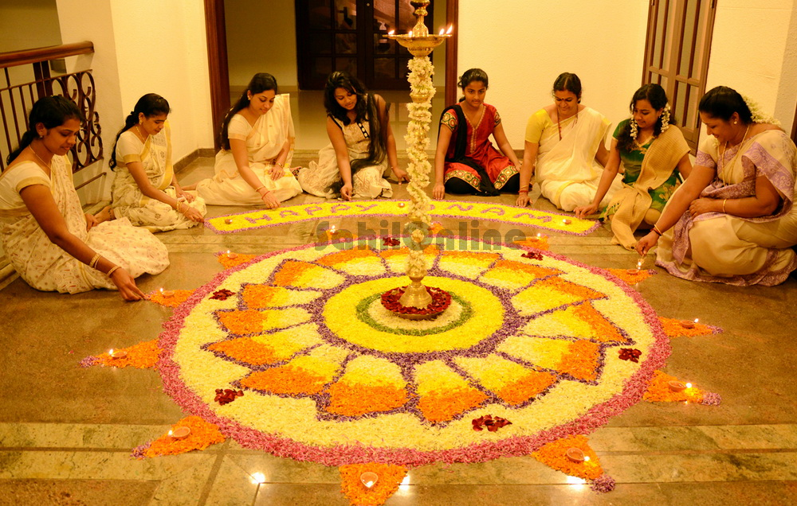
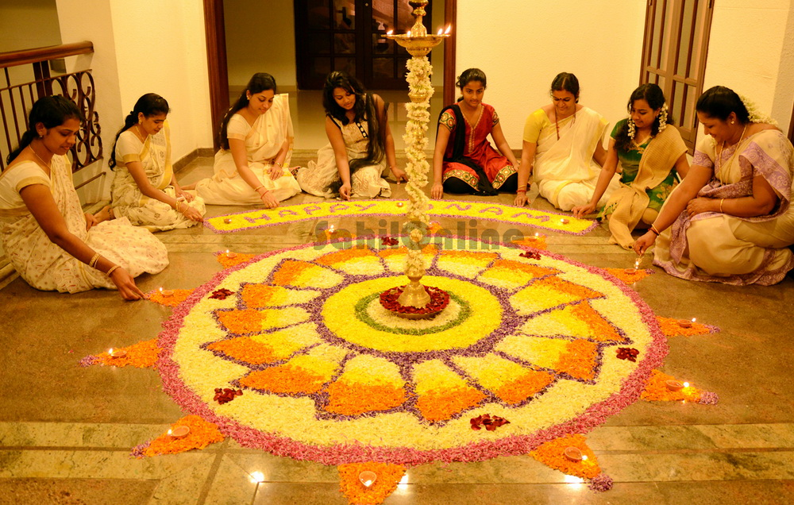
 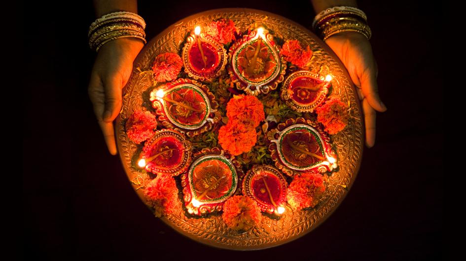
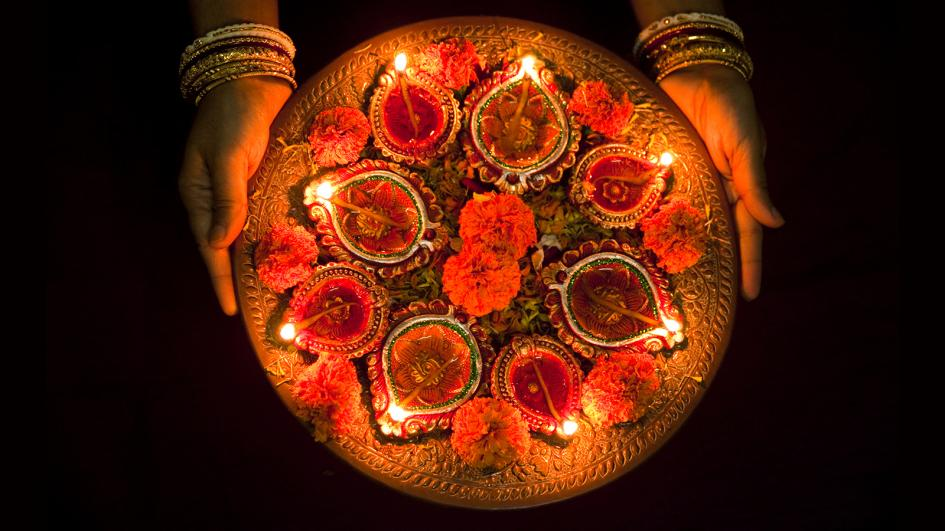
Food
Indian food is very well known for its aromatic spices and as I mentioned at the tag line there is more to it than chicken tikka masala. Although meat is consumed, most of the Indian meal includes vegetables and millets. Each state has their own style of cooking and incorporate their own blend of spices in the food. Idly, sambhar, vada and pongal are the staple food of Tamil Nadu. Rice and Wheat are always part of the meal along with a variety of vegetables and greens. India is also known for its street foods. There are also a variety of festive sweets and snacks prepared during special occassions. Tea is a common drink consumed widely across the country.
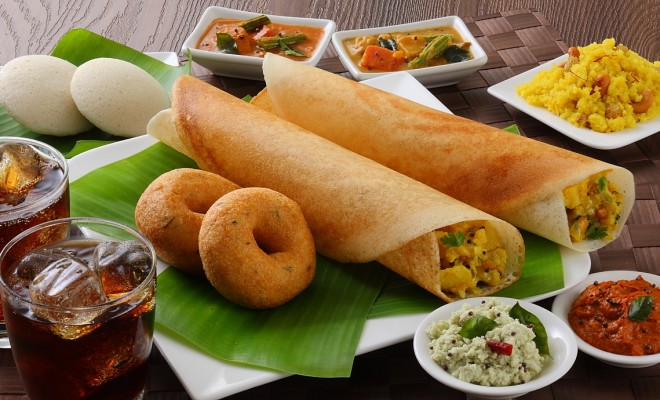 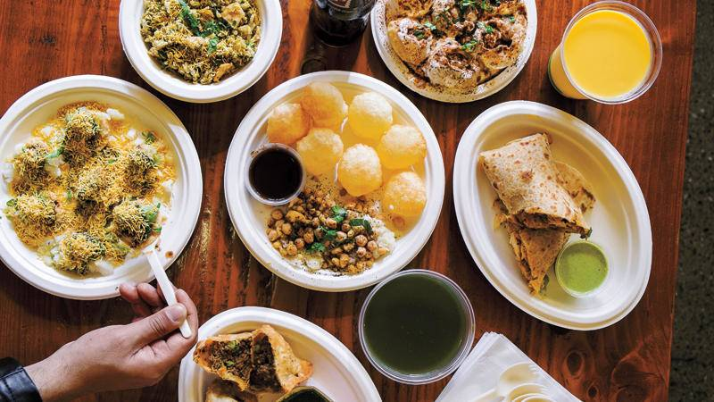 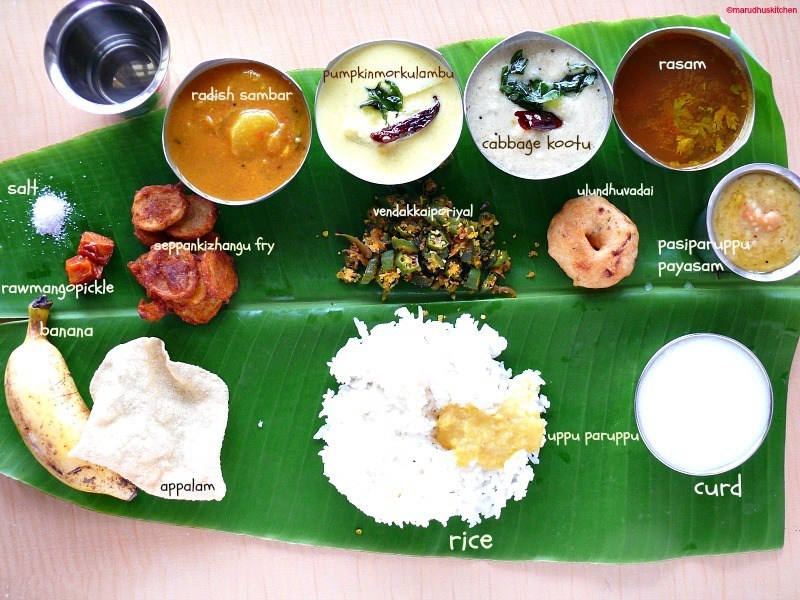
Tourist Attractions
India is home to an extraordinary variety of climatic regions, ranging from tropical in the south to temperate and alpine in the Himalayan north, where elevated regions receive sustained winter snowfall. Coming to the south, Tamil Nadu is famous for its temples and hill stations. There are also lots of waterfalls and wild life animal sanctuaries in the south due to its tropical climate. Kerala is famous for its backwaters and floating houseboats where as Karnataka is famous for its heritage sites and palaces. For more tourist attractions, visit here.
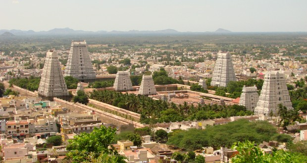 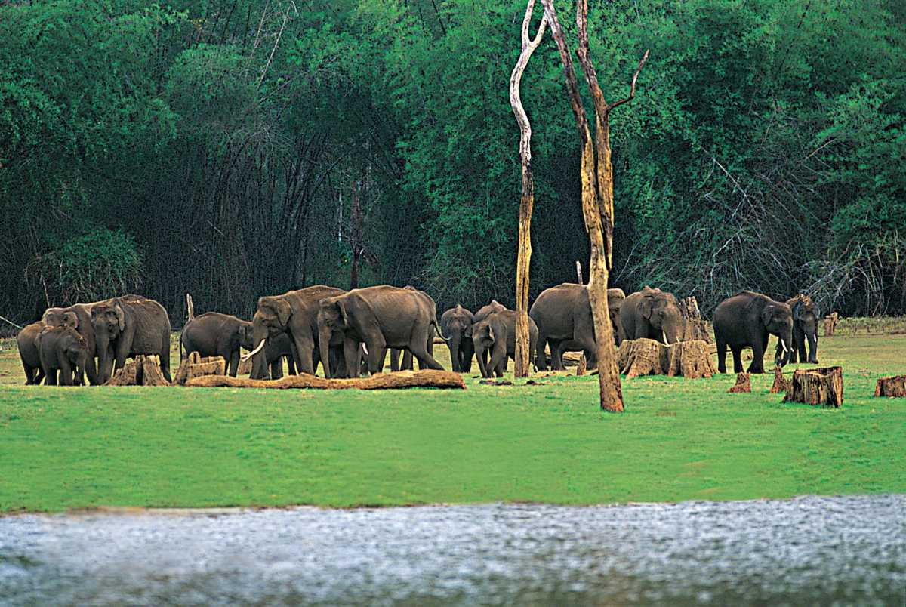 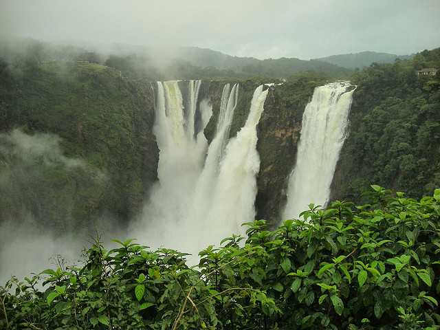 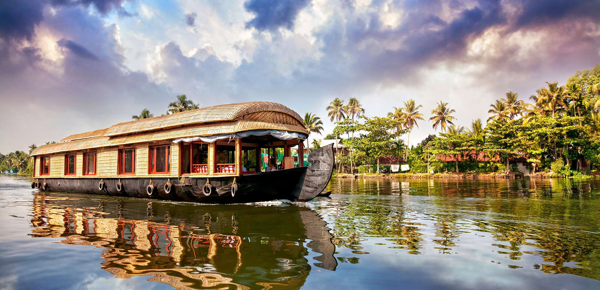Hope you had a great tour of the southern India. So the next time you visit India, try to explore more and enjoy the warmth of the South.